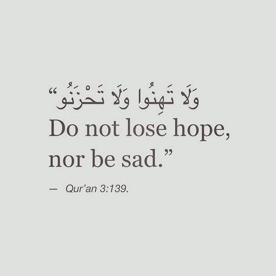
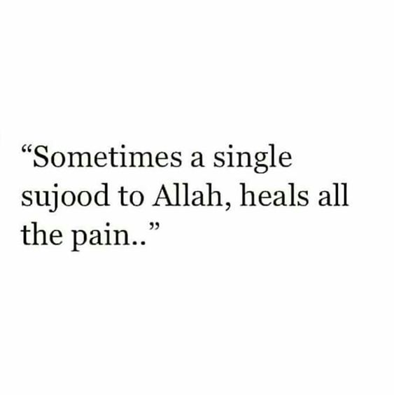
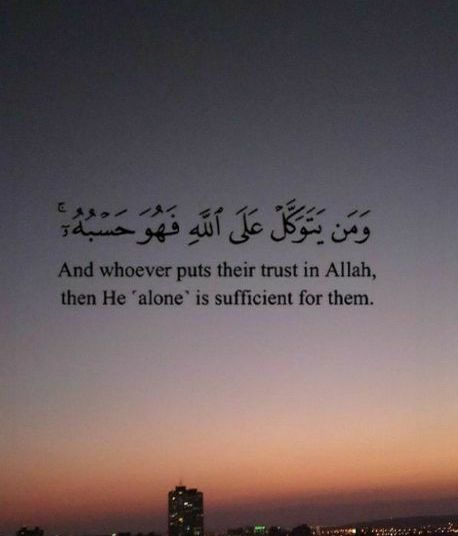

اللَّهُمَّ إِنِّي أَعُوذُ بِكَ مِنْ زَوَالِ نِعْمَتِكَ، وَتَحَوُّلِ عَافِيَتِكَ، وَفُجَاءَةِ نِقْمَتِكَ،
وَجَمِيعِ سَخَطِكَ
O Allah! I seek refuge in You from the decline of Your blessings, the passing of safety, the sudden onset of
Your punishment and from all that displeases you.
الْحَمْدُ لِلهِ الَّذِي بِنِعْمَتِهِ تَتِمُّ الصَّالِحَاتُ
All Praise is for Allah by whose favor good works are accomplished.
Ibadah you should do:
Sujood Syukur (Read as per-normal as when praying. Person does not have to been in the state of )
Sadness
What should I do as a muslim when feeling sad/hopeless/miserable?

Doas you should read:
إِنِّي أَعُوذُ بِكَ مِنْ الْهَمِّ وَالْحُزْنِ وَالْعَجْزِ وَالْكَسَلِ وَالْبُخْلِ وَالْجُبْن
وَضَلَعِ الدَّيْنِ وَغَلَبَةِ الرِّجَالِ
O Allah, I take refuge in You from anxiety and sorrow, weakness and laziness, miserliness and cowardice, the
burden of debts and from being over powered by men.
اللهمّ فارج الهم، كاشف الغم، مذهب الحزن، اكشف اللهمّ عنّي همّي وغمّي ، وأذهب عنّي حزني
Oh Allah, Reliever of anxiety, Remover of distress, Dispeller of grief! Remove my anxiety, distress, and dispel
from me my sadness.
Dalil:
- يَا أَيُّهَا الَّذِينَ آمَنُواْ اسْتَعِينُواْ بِالصَّبْرِ وَالصَّلاَةِ إِنَّ اللّهَ مَعَ الصَّابِرِينَ -
“O you who believe[d]! Seek help through patience and the prayer. Indeed, Allah (is) with the patient ones.”
(Quran, 2:153)
- لَا يُكَلِّفُ اللَّهُ نَفْسًا إِلَّا وُسْعَهَا -
“Allah does not burden a soul beyond that it can bear” (Quran,2:286)
Surah to read:
Surah Duha
Anger
What should I do as a muslim when feeling angry?
Doa you should read:
اللَّهُمَّ أَذْهِبْ غَيْظَ قَلْبِي
Oh Allah, remove anger from my heart.
Dalil:
1) Abu Hurayrah reported Allah’s Messenger (may peace be upon him) as saying: The strong-man is not one who wrestles well but the strong man is one who controls himself when he is in a fit of rage.
Sahih Muslim Book 032, 6313
2) On the authority of Abu Hurayrah (may Allah be pleased with him):
“A man said to the Prophet, ‘Give me advice.’ The Prophet, peace be upon him, said, ‘Do not get angry.’ The man asked repeatedly and the Prophet answered each time, ‘Do not get angry.’”
Related by Bukhari & Muslim
3) ‘Atiyyah reported: The Messenger of Allah, peace be and blessings be upon him, said, “Verily, anger comes from Satan and Satan was created from fire. Fire is extinguished with water, so if you become angry then perform ablution with water.”
Sunan Abī Dāwūd 4784
4) The Prophet (sal Allahu alaihi wa sallam) said: “If one of you gets angry and he is standing, then he should sit down until his anger subsides. If it does not, then he should lie down.” [Sunan Abu Dawood]
Ibadah you should do
Sit down, lie down or take Wudhu.
Fear
What should I do as a muslim when feeling fearful?

Doa you should read:
أَعُوذُ بِكَلِمَاتِ اللَّهِ التَّامَّاتِ مِنْ شَرِّ مَا خَلَقَ
I seek refuge with the complete words of Allah from the evil of what He has created
Dalil:
- الَّذِينَ آمَنُوا وَتَطْمَئِنُّ قُلُوبُهُم بِذِكْرِ اللَّهِ ۗ أَلَا بِذِكْرِ اللَّهِ تَطْمَئِنُّ الْقُلُوبُ -
"Those who have believed and whose hearts are assured by the remembrance of Allah . Unquestionably, by the remembrance of Allah hearts are assured." (Quran,13:28)
- قَالَ هَلْ آمَنُكُمْ عَلَيْهِ إِلَّا كَمَا أَمِنتُكُمْ عَلَىٰ أَخِيهِ مِن قَبْلُ ۖ فَاللَّهُ خَيْرٌ حَافِظًا ۖ وَهُوَ أَرْحَمُ الرَّاحِمِينَ -
"But Allah is the best guardian, and He is the most merciful of the merciful." (Quran, 12:64)
Jealousy
What should I do as a muslim when feeling jealous towards other people?
Doa you should read:
اللهم طهر قلبي من كل سوء ، اللهم طهر قلبي من كل ما يبغضك، اللهم طهر قلبي من كل غلٍ وحقدٍ وحسد وكبر
Oh Allah, clean away all forms of evil from my heart. Oh Allah, clean my heart and remove everything that displeases you. Oh Allah, clean my heart of all every form of bitterness, hard feelings, and jealousy.
Dalil:
أَهُمْ يَقْسِمُونَ رَحْمَتَ رَبِّكَ ۚ نَحْنُ قَسَمْنَا بَيْنَهُم مَّعِيشَتَهُمْ فِي الْحَيَاةِ الدُّنْيَا ۚ وَرَفَعْنَا بَعْضَهُمْ فَوْقَ بَعْضٍ دَرَجَاتٍ لِّيَتَّخِذَ بَعْضُهُم بَعْضًا سُخْرِيًّا ۗ وَرَحْمَتُ رَبِّكَ خَيْرٌ مِّمَّا يَجْمَعُونَ
"Do they distribute the mercy of your Lord? It is We who have apportioned among them their livelihood in the life of this world and have raised some of them above others in degrees [of rank] that they may make use of one another for service. But the mercy of your Lord is better than whatever they accumulate." (Quran,43:32)
Hatred
What should I do as a muslim when feeling hatred towards something?

Doa you should read:
اللهم لا تجعل في قلبي كراهية لأحد
Oh Allah, don't let the hate of anyone reside in my heart.
Dalil:
- فَاتَّقُوا اللَّهَ وَأَصْلِحُوا ذَاتَ بَيْنِكُمْ ۖ وَأَطِيعُوا اللَّهَ وَرَسُولَهُ إِن كُنتُم مُّؤْمِنِينَ -
"So fear Allah and amend that which is between you and obey Allah and His Messenger, if you should be believers." (Quran, 8:1)
Ibn Abbas reported: The Prophet, peace and blessings be upon him, would supplicate by saying, “O Lord, help me and do not help against me, support me and do not support against me, plan for me and do not plan against me. Guide me and make guidance easy for me. Support me against those who transgress against me. O Lord, make me grateful to you, mindful of you, fearful of you, obedient to you, humble to you, turning to you and repenting. O Lord, accept my repentance, wash away my sin, answer my supplication, establish my proof, direct my tongue, guide my heart, and remove the hatred from my chest.”
Source: Sunan al-Tirmidhī 3551